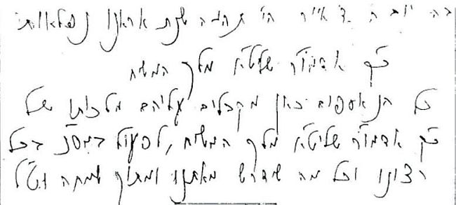

משנה: “ בכל יום ויום עלינו להתבונן: האם ‘הגענו’ למלך? האם אנו מתייחסים אל הוראות
משנה: “בכל יום ויום עלינו להתבונן: האם ‘הגענו’ למלך? האם אנו מתייחסים אל הוראותיו של הרבי כאל הוראות המלך, שחייבים לקיימם? האם אנו מבטלים את רצוננו בפני רצונו של הרבי, כביטול עבדי המלך למלך?” >> בשיחה עמוקה ומרתקת עם הרב שניאור זלמן ליברוב, שליח הרבי מה”מ לשכונת פלטבוש, וחבר הוועד הרוחני של ‘בית משי
משנה: “בכל יום ויום עלינו להתבונן: האם ‘הגענו’ למלך? האם אנו מתייחסים אל הוראותיו של הרבי כאל הוראות המלך, שחייבים לקיימם? האם אנו מבטלים את רצוננו בפני רצונו של הרבי, כביטול עבדי המלך למלך?” >> בשיחה עמוקה ומרתקת עם הרב שניאור זלמן ליברוב, שליח הרבי מה”מ לשכונת פלטבוש, וחבר הוועד הרוחני של ‘בית משיח’, הוא משיב משנה סדורה וברורה על שורה של שאלות נוקבות, ומעלה רעיון לפרוייקט מקורי שיקרב את הקצוות השונות ואולי אף יאחד את כלל חסידי חב”ד סביב קו אחד

יש הרואים במציאות הגשמית חזות הכול, ו’אין להם הסבר’ לשיחות הקודש שניבאו מציאות אחרת; ויש הרואים את המציאות האמיתית דרך משקפת השיחות והביטויים הנפלאים של נ”א–נ”ב אודות ‘חיים נצחיים’ נשמה בגוף גשמי, ו’אין להם הסבר’ על המציאות הפיזית, שבה לא רואים את הרבי בעיניים הגשמיות. ובתווך יש הטוענים ש’אלו ואלו דברי אלוקים חיים’, ומבחינתם כל התקופה הנוכחית היא בבחינת ‘נושא הפכים’…
וכריבוי הפרצופים, כך ריבוי הדעות. יש המפרסמים קבל עם ועולם שהרבי חי וקיים וכי הוא המלך המשיח שיבוא תיכף ומיד לגאלנו, ויש המפרסמים שהרבי מלך המשיח, אך נמנעים מלתת ביטוי לאמונתם כי הרבי חי וקיים. ויש המושכים ידיהם מזה ומזה…
יש שאמנם מאמינים בתוך–תוכם שהרבי מלך המשיח חי וקיים, אך מתקשים להסביר את זה למקורביהם. יש המודעים לקושי שלהם ומשתדלים לסלק את המחסום, ויש המעדיפים לברוח מהתמודדות, וכדי להרגיע את עצמם לוקחים הוראה–מחייבת שנאמרה בקשר ללימוד עניני גאולה ומשיח, שיש ללומדם באופן שיתקבל אצל הלומדים - וטוענים שאין זו הוראה–מחייבת אלא הגבלה השוללת כל פרסום שאינו ‘עובר מסך’.
בשיחה עמוקה ומרתקת שקיימנו עם הרב שניאור זלמן ליברוב, שליח הרבי מה”מ לשכונת פלטבוש, וחבר הוועד הרוחני של ‘בית משיח’, הצבנו לפניו שאלות נוקבות, וקיבלנו משנה סדורה וברורה, לצד רעיון מקורי לפרוייקט שיקרב את הקצוות השונות ואולי אף יאחד את כלל חסידי חב”ד סביב קו אחד, עד כמה שהדבר ניתן…
מלך המשיח - לא רק בפה. גם בלב.
כחסידי חב”ד, לא צריכים לשכנע אותנו שהרבי הוא מלך המשיח. זה מוטבע בDNA שלנו. אבל כאשר מדובר על פרסום מחוץ לחב”ד - יש השואלים: הרי במשך שנים רבות נזהרנו לתת לזה ביטוי מחוץ לחב”ד, זאת בהתאם להוראותיו של הרבי עצמו, שאסר לעסוק בנושא זהותו של משיח, מחשש שזה ירחק יהודים מחסידות?!
הרב ליברוב: כלל ידוע הוא ש”הפה שאסר - הוא הפה שהתיר”. אכן, במשך שנים אסר הרבי על פרסום העניין, ועד שבשמחת תורה תשמ”ה התבטא הרבי שזוהי מלחמה בתורת הבעל שם טוב, ומלחמה במשיח עצמו. אבל לאחר שחלפה שנה, הרבי עצמו הוריד את האיסור ובשמחת תורה תשמ”ו התבטא שנשיא הדור הוא משיח שבדור, והבהיר שלא יפריע לו אם יפרשו דברים כפשוטם.
אמנם בתשמ”ו הרבי לא התיר לגמרי את הפרסום, אבל לאחר שחלפו כמה שנים נוספות, ולאחר שהגענו לשנת תנש”א, שנה שמלך המשיח נגלה בה - החל הרבי לקבל בברכה חתימות לקבלת המלכות, עודד כמה פעמים את שירת ‘יחי אדוננו מורנו ורבינו מלך המשיח לעולם ועד’, ועד שבשנת תשנ”ג החל הרבי לעודד בקביעות את שירת ‘יחי אדוננו’, גם כאשר שהו במקום צוותי תקשורת ששידרו זאת לעולם כולו. זאת אומרת, שהרבי עצמו שינה את המצב, מאיסור לפרסם, למצווה לפרסם.
מדוע כל כך חשוב לפרסם ולהדגיש זאת?
הרב ליברוב: קודם כל, אם זה לא היה חשוב - הרבי מלך המשיח לא היה מזכיר זאת שוב ושוב בשיחותיו. מי שלומד את שיחותיו של הרבי בשנים נ”א ונ”ב, שם לב שבשנים האחרונות החל הרבי לצטט את דברי הברטנורא ש”בכל דור ודור נולד אחד מזרע יהודה שהוא ראוי להיות משיח לישראל”, כמו גם את דברי החתם סופר על “אחד הראוי מצדקתו להיות גואל וכשיגיע הזמן יגלה אליו השי”ת וישלחו”. ציטוטים אלו לא היו רגילים כלל וכלל עד השנים האחרונות. אבל מאז תנש”א, נראה שהיה חשוב לרבי להביא שוב ושוב ציטוטים אלו.
בשנים אלו הרבה הרבי להוסיף לתוארו של הרבי הריי”צ “נשיא דורנו” - את התואר “משיח שבדורנו”, וכן הרבה לדרוש את שמותיו של הרבי הריי”צ, הן יוסף והן יצחק - כשמותיו של משיח, ובהמשך לכך אף רמז בגלוי לשמו הק’ ש”משיח מנחם שמו”, בכמה וכמה הזדמנויות.
[ומעניין שבשיחת י”ב סיון תנש”א, בהערה 149 מציין הרבי הן לשמותיו של הרבי הריי”צ, והן לשם ‘מנחם מענדל’ - אך על שמותיו של הרבי הריי”צ כותב רק שהן “קשורים עם הגאולה”, ואילו על שמו של הצמח–צדק (בגימטריא “מנחם מענדל”) כותב “הם שמותיו של המלך המשיח”].
אפשר לומר שאמנם הרבי לא אמר את המילים “אני מלך המשיח”, אבל אמר רמזים ברורים ושקופים מכל זווית אפשרית.
ואם לרבי זה חשוב - בוודאי ובוודאי שזה צריך להיות חשוב אצל חסידים.
למה אנחנו מדגישים תמיד שהרבי הוא “משה שבדור”? הרי בזה אנחנו כביכול פוגעים בצדיקים אחרים… אלא, מכיוון שהרבי חזר על כך ריבוי פעמים, ברור לנו שזה דבר חשוב שגם אנחנו צריכים לאומרו. כך בדיוק בנוגע לתוארו של הרבי כמשיח.
חשוב לציין, שבאלול תשנ”ג, הסכים הרבי לראשונה שבפתח–דבר של ספרי קה”ת יוסיפו לתוארו את המלים “מלך המשיח”, ומאז נדפסו עשרות ספרי קה”ת כאשר תוארו של הרבי בפתח–דבר הוא “כ”ק אדמו”ר מלך המשיח שליט”א”. לאחר שהרבי נתן את הסכמתו לכתוב “מלך המשיח” בהוצאה רשמית של ליובאוויטש, הרי מי שמגיע ושואל למה זה חשוב, דומה לאותו אחד שהיה שואל אחרי יו”ד שבט תשי”א, לאחר שהרבי הסכים שיכתבו עליו “כ”ק אדמו”ר שליט”א” - מהי החשיבות לכתוב תואר זה על הרבי?…
מובן, שכמו שהחשיבות בכתיבת התואר “אדמו”ר” צריכה להתבטא בהנהגתנו, שנתייחס אל הרבי כאל אדוננו, מורנו, ורבינו - כך גם כאשר כותבים על הרבי את התואר “מלך המשיח” ומכריזים “יחי אדוננו” בכל הזדמנות מתאימה, יש לעבוד על הנהגה פנימית שתבטא את ההתבטלות שלנו לרבי מלך המשיח. עלינו לחיות בביטול מוחלט לרבי מלך המשיח, בדוגמת הביטול של עבדי המלך למלך. לא קל לממש זאת, אבל אנחנו צריכים לשאוף לכך.
מנגד, הטענה שצריכים להתמקד רק בעבודה פנימית ואין צורך בהכרזה והדגשה חיצונית, כמוה לומר שצריך רק לעורר את האהבה והיראה ואין צורך לומר את מילות התפילה. אמנם כשם שתפילה ללא כוונה כגוף ללא נשמה, כך הכרזת יחי בלי ביטוי מעשי בחיי היום יום, כמוה כגוף ללא נשמה. אבל ברור שצריכים גם את ההכרזה!
במחזור החב”די, לפני הפסקה ‘המלך’ מובא סיפור אודות הרה”ק ר’ אהרן מקרלין, מגדולי תלמידי הרב המגיד, שפעם אחת כשהתחיל לומר ‘המלך’ התעלף מאוד. ואחר–כך שאלוהו מה היה זה, והשיב שהתבונן במאמר המובא בחז”ל “אי מלכא אנא - עד השתא אמאי לא אתית לגבאי וכו’”.
הכוונה לסיפור הגמרא במסכת גיטין על רבן יוחנן בן זכאי שעשה עצמו כמת כדי להתחמק מבריוני ירושלים - עד שהצליח לצאת מירושלים ולהגיע למצביא הרומי אספסיינוס. כאשר ראהו, אמר רבן יוחנן ‘שלום עליך המלך’. שאל אותו אספסיינוס אם אני מלך, מדוע לא הגעת אלי עד עכשיו?
אנחנו לא צריכים לחכות לראש השנה, אלא בכל יום ויום כאשר אנו מכריזים “יחי אדוננו”, או מזכירים בהקשר אחר שהרבי הוא מלך המשיח - עלינו להתבונן בזה, כל אחד אליבא דנפשי’: האם ‘הגענו’ למלך? האם אנו מתייחסים אל הוראותיו של הרבי כאל הוראות המלך, שחייבים לקיימם? האם אנו מבטלים את רצוננו בפני רצונו של הרבי, כביטול עבדי המלך למלך?
אנחנו צריכים להיות דוגמא חיה, ובאופן כזה שכל רואינו יכירו שכאן עומד ‘עבד מלך’. לא רק להכריז כך, אלא להתנהג כך בפועל ממש!
הרי נמצאים אנו בימי ‘הרת עולם’, ובעקבתא דימי ‘הרת עולם’, באמירת ‘שמע ישראל’ בנעילת יום כיפור, אנו מכוונים למסירות נפש כפשוטו.
עלינו לשחזר לעצמנו, את מה שכתבתנו וחתמנו במכתב ההתקשרות ובקבלת המלכות, שם התחייבנו לקיים את הוראות מלך המשיח במסירות נפש, ולעשות חשבון נפש: האם אנו מקיימים מה שהתחייבנו?!
לא מספיק לכתוב ‘נשיא דורנו’?
למרות הכל, יש המתקשים לאחר ג’ תמוז לפרסם שהרבי הוא מלך המשיח, ומעדיפים לכתוב על הרבי את התואר ‘נשיא דורנו’. ובכלל, טוענים הם, כולם יודעים שחסידי חב”ד מאמינים שהרבי הוא מלך המשיח, ואין צורך להדגיש זאת בכל הזדמנות.
הרב ליברוב: קודם כל, לשיטתם של אלו הסבורים שהמילים “אופן המתקבל” נועדו להגביל ולשלול כל מה שקשה להסבירו - הרי גם התואר “נשיא דורנו” לא עומד בקריטריון של ‘אופן המתקבל’. הסיבה היחידה לכך שכיום תואר זה ‘מקובל’, היא בזכות אותם חסידים שמכריזים ‘חי וקיים’ [ובאמת, זה התקבל משום שזה אמת, וכאשר החליטו ללכת על זה - האמת מתקבלת]. כמו שבזמנו הסיסמא “היכונו לביאת המשיח” נחשבה ‘מקובלת’ לאחר שהיו חסידים ששרו יחי אדוננו כבר בחודש אייר תנש”א.
אבל הנקודה העיקרית היא, שכאשר לא מכריזים שהרבי מלך המשיח, הרי זה כאילו מכריזים שהרבי אינו מלך המשיח חלילה, ובדומה למה ששמענו מהרבי עצמו במעשה שהיה לפני ארבעים שנה:
בשנת תשל”ו התפרסמה בעיתון ‘אלגמיינער זשורנאל’ תמונתו של הרבי כשהוא שורק בהתוועדות י”ט כסלו. אחד החסידים שחרה לו מאוד על פרסום זה, שיגר מכתב חריף למערכת העיתון, שאסור לפרסם תמונות כאלה כיוון שזה גורם ביזיון לליובאוויטש.
בהתוועדות פורים של אותה שנה, התייחס הרבי למכתבו של אותו חסיד, ולאלו שסברו כמותו, בלשון חריפה ביותר: אותו חב”דניק מתבייש - אמר הרבי - ובמקום לחפש מקור להנהגת רבו, הוא מניח את ראשו בערדליים, מסמיק ושותק. ובשתיקתו הוא נותן לאחרים להבין, שאף הוא סבור שאין זה ראוי, אלא שאין לו ברירה… הרבי לא מתייעץ איתו…
בשיחה זו מבחינים במסר מאוד מעניין: גם אם נאמר שלכתחילה לא היה מקום לפרסם תמונה כזאת, הרי לאחר פירסום התמונה, תפקידו של חסיד הוא למצוא מקור להנהגת רבו, ולא להעלים ולהתבייש בה.
ומכאן ללימוד שתי הוראות לזמננו אנו: א. לאחר שפרסמו שעל פי שיחותיו של הרבי המציאות היא שהרבי חי וקיים - עלינו להוסיף ולמצוא מקורות נוספים בגמרא ובמפרשים, כדי לחזק את העניין. ולא להסתייג חלילה מפרסומים כאלה. ב. מי ששותק - גורם לזולת לחשוב שאין מקור לכך.
אי לכך, אין ספק שצריכים להמשיך ולפרסם את זהותו של הרבי מלך המשיח, ולהדגיש זאת בכל הזדמנות. כמובן שצריכים להשקיע מאמץ מיוחד להגיש זאת באופן שזה יתקבל אצל המקורבים בשכלם. זאת האחריות שלנו!
לא רק ‘מלך המשיח’ - גם חי וקיים!
יש המצליחים להסביר שהרבי מלך המשיח - אבל בנוגע לחיים נצחיים, הם טוענים שהרבה יותר קל ופשוט לומר ולהסביר למקורבים ש”הוא בחיים” במובן הרוחני, על דרך מאמר הגמרא על יעקב אבינו ש”לא מת . . מה זרעו בחיים אף הוא בחיים”. אנשים מבינים שעיקר חיי הצדיק אינם חיים בשריים, אלא רוחניים - ולכן כאשר זרעו ‘בחיים’, זה מורה שגם הוא ‘בחיים’. מדוע אנו מתעקשים לומר שהרבי חי וקיים כפשוטו?
הרב ליברוב: ראשית, גם בנוגע ליעקב אבינו - בניגוד לכמה וכמה מהמפרשים הנוטים לפרש את דברי הגמרא ברבדים רוחניים, הרבי מאמץ את הגישות שמפרשות את הגמרא במובן הכי פשוט של המילה, ובגשמיות ממש. שאם לא כן, מה ההבדל בין יעקב אבינו לשאר הצדיקים, הרי כולם ‘חיים’ ברוחניות? הרבי מפרש את הגמרא ברובד הכי גשמי ו’כפשוטו’, עד שבשיחת כ’ מנחם אב תשל”א דן הרבי מה חשו המצרים כאשר נגעו בגופו של יעקב אבינו בשעת החנטה, ובהמשך השיחה קובע הרבי שאם בימינו אלה יגע מישהו בגופו של יעקב אבינו - הוא לא יהיה טמא, מכיוון שהמת מטמא ואין החי מטמא!
שנית, בנוגע לרבי שליט”א: כיוון שאין דור שאין בו נשיא כמשה, והכוונה היא לנשיא בגוף גשמי, כפי שהרבי כותב בלקוטי–שיחות חלק כ”ו בתחילתו, שמוכרח להיות בכל דור ודור בשר ודם שבו תתלבש נשמת משה רבינו; ומכיוון שהרבי קבע פעמים אין ספור שדורנו דור השביעי הוא הדור האחרון לגלות ודור ראשון לגאולה, הרי בוודאי שלא יכול להיות דור שמיני ר”ל, ונשיא הדור השביעי הוא הרבי - אם כן ברור, שגם כעת מלובשת נשמתו של משה רבינו בגופו של הרבי, שהוא נשיא דור השביעי, כמו לפני ג’ תמוז.
ושלישית: אתה טוען שיותר קל להסביר באופן אחר - מה הטעם להסביר משהו לא אמיתי? מכיוון שאצלנו ברור ללא כל ספק שהרבי חי וקיים בגשמיות - מדוע לשקר לציבור ולהעביר לו מסר שאיננו מאמינים בו (וכמובא בהקדמה לקונטרס ‘עץ החיים’ שהרבי חילק בידו הק’)?
בשמחת תורה תשי”א הורה הרבי ללכת לבתי כנסת ולהסביר ליהודים שבאמת משה לא מת, ואין שום שינוי, כי אם, שנעשה נתינת מקום לקא–סלקא–דעתך שמשהו קרה. והרבי מבהיר שבאם אנשים ישאלו שאלות, יש לומר להם: זוהי המציאות, גם אם אתה אינך מבין! אם היו לוקחים אז ‘יועצי תקשורת’ ו’אנשי שיווק’ סביר להניח שהם היו יועצים למתן את המסר, ולעדן את ההתבטאויות ה’מרחיקות’… אבל הרבי לא עשה כך, אלא הורה לדבר בכל ה’שטורעם’ שמשה רבינו לא מת. ולמה? כי זו האמת!
ובפשטות, היה חשוב מאוד לרבי שיידעו זאת, למרות שלא יבינו ולא יתקבל בשכלם, וכפי הדוגמא שמביא שם מחינוך הילדים, שבענייני אמונה אומרים לו למרות שאינו מבין, וכשיגדל - יבין.
כך גם בענייננו: למרות ההעלם וההסתר לעינינו הגשמיות, אנו יודעים שהמציאות האמיתית נקבעת לפי מה שכתוב בתורה, ומכיוון שכך, האמת היא שהרבי חי בגשמיות. לכן אין טעם לאמץ שיטות אחרות, גם אם יועצי פרסום טוענים שהמסר הזה ‘ירוץ’ טוב יותר…
הרבי דיבר על כך שיהודי יכול להיות ‘נושא הפכים’, ובוודאי שבכוחו של נשיא הדור להיות ‘נושא הפכים’. מה מפריע לומר שבג’ תמוז הייתה ‘הסתלקות’, ואין זה סתירה למציאות האמיתית ש’הרבי חי וקיים’, ו’חיים נצחיים ללא הפסק’ - כיוון שהרבי הוא ‘נושא הפכים’?
הרב ליברוב: כפי שהזכרתי קודם, תפקידנו הוא להעביר את האמת, ולא להמציא דברים. נכון שהרבי יכול להיות ‘נושא הפכים’ - אבל מדוע שנאמר כך בענייננו? ואם דואגים ל’אופן המתקבל’ - נראה לי שיותר קל לקבל שהרבי ‘חי וקיים’ מאשר לקבל את המושג ‘נושא הפכים’ [או שפשוט מתכוונים למשהו ערטילאי שמנותק מהמציאות, וגם האומר אינו מאמין בזה]…
אבל הנקודה העיקרית היא, שאנחנו לא ממציאים דברים, אלא לומדים את השיחות של הרבי, ורואים את המציאות בהתאם לשיחות. לדוגמא, בשיחת שבת פרשת האזינו תש”נ קבע הרבי: “מובן וגם פשוט, שבימינו אלה . . אין עוד ענינים של ירידה כו’ (כולל גם שלילת הענין ד”מאן דנפיל מדרגי’ איקרי כו’”), ובמילא, ישנה מציאותו של משה - “גואל ראשון הוא גואל אחרון” - נשמה בגוף באופן נצחי”.
יש שלוש אפשרויות ללמוד את השיחה הזאת: א. הרבי אמנם קבע עובדה, אבל “לא זכינו”, וזה לא קרה ר”ל. ב. הרבי קבע עובדה, ועשה בדיוק הפוך כי הוא ‘נושא הפכים’ - נושא מורכב ומסובך להסבירו לאדם מהרחוב. ג. הרבי קבע את העובדה, וזוהי אכן המציאות: בדורנו לא הייתה הסתלקות הנשמה מן הגוף. כמובן שכל חסיד יכריע כאפשרות השלישית.
אם ננסה לחדור לשורש הדברים, נגלה שמתחילת נשיאותו הרבי מנווט ומחנך אותנו לסוג כזה של ‘התקשרות’, שרואה בכל מילה של הרבי ‘קודש קודשים’. הדברים ידועים, ואזכיר רק דוגמא אחת מיני רבות: כאשר בשנת תשמ”ח שינה הרבי ממנהגו של הרבי הריי”צ, ואחז את ארבעת המינים כשהם מחוברים לאורך כל אמירת ה’הלל’, בכדי להדגיש את עניינה של שנת ‘הקהל’ - התבטא הרבי ביטויים מבהילים בנוגע לשינוי פרט קטן, ואמר שהיה צריך על כך ‘מסירות נפש’ כיוון ש’זהו פגם בהתקשרות’.
לאחר עשרות שנים בהן מרגיל אותנו הרבי שכל מילה של הרבי מדוייקת, וחובה להצמד לכל מה ש”נפיק מפומיה” - הרבי בוודאי רוצה שנדייק בכל מילה משיחותיו בשנת תשנ”ב, ובמיוחד לאור הוראתו לאחר יו”ד שבט תש”י שהלוואי היו מדקדקים בשיחות האחרונות. ואם על הרבי הריי”צ התבטא הרבי בתש”י ש”משה לא מת”, בוודאי מצופה מאיתנו להתבטא ‘אלף פעמים ככה’ בנוגע לרבי שליט”א.
ולכן, אם בשנת תש”י (למרות שהיה מעבר בין הדור השישי לדור השביעי) הרבי לא הדגיש את ההסתלקות אלא ההיפך, שזהו ניסיון, היפך האמת, וכו’ וכו’ - על אחת כמה וכמה שכעת, כאשר הדור השביעי נמשך ללא הפסק, עלינו לפעול ברוח זו, וביתר שאת ויתר עוז.
המתכון לאחדות - במחיקה האחרונה
לסיום…
הרב ליברוב: השיחה האחרונה - לעת–עתה - ששמענו מהרבי בשבת פרשת ויקהל תשנ”ב, לא הוגהה על ידי הרבי, אבל הרבי כן הגיה את התוכן קצר של השיחה. ומה היו הגהותיו של הרבי? סה”כ שלושה הגהות. אלו הן ההגהות האחרונות של הרבי, וחובה גדולה ביותר לדייק בהן.
כמובן שמי אנחנו ומה אנחנו שנבין מה עומד מאחורי הגהותיו של הרבי, אבל כמו שאומרים לגבי פירושים בתניא, שאם זה מועיל לעבודת ה’, זה אפשרי - אני מרשה לעצמי לומר ‘פשט’ בהגהה האחרונה של הרבי, בתקווה שהדבר יעורר ויועיל לעבודת ה’ מתוך אחדות, ובפרט שאין ספק שהרבי כיוון לכך שנדייק בשיחות האחרונות, בהתאם להוראותו לאחר יו”ד שבט.
ההגהה הראשונה הייתה ממש בתחילת השיחה. המניחים כתבו ש”ברוב השנים” פרשיות ויקהל פקודי הן מחוברות, והרבי שינה ל”בכמה וכמה שנים”. לכאורה המניחים דייקו, שכן מתוך 19 שנות מחזור - 12 פעמים הפרשיות הללו מחוברות. ומדוע שינה הרבי?
אולי אפשר לומר, שמכיוון שבשיחה זו הדגיש הרבי מאוד את מעלת האחדות - ביקש הרבי לרמוז זאת גם בהגהתו. שכן, למילה “רוב” יש משמעות חזקה מאוד. התורה נותנת תוקף גדול ל’רוב’. אבל, יש בזה חיסרון: הרוב שולל את המיעוט. כאשר אומרים ‘רוב’, באופן אוטומטי זה שולל את המיעוט. לעומת זאת כאשר כותבים “כמה וכמה”, אין בזה שלילה. זה רמז לעניין האחדות.
באותה נקודת מבט אפשר לדייק גם בהגהה השלישית, שהיא ההגהה האחרונה שזכינו לעת–עתה:
המניחים כתבו ש”ויקהל–פקודי הן פרשיות נפרדות בפ”ע [בפני עצמן]”, והרבי מחק את המילה “בפ”ע”. אפשר לומר בפשטות שזה כפל לשון, ייתור לשון. אבל כאשר לוקחים בחשבון שזוהי ההגהה האחרונה של הרבי, מוכרחים לדייק בזה קצת יותר לעומק, ולומר ששוב מבקש הרבי להדגיש את עניין האחדות: גם כאשר חייבים להיות נפרדים - לא צריך להוסיף על כך ולהיות כל אחד בפני עצמו!
ובענייננו: גם כאשר יש לנו דיעות נפרדות, בגלל שכך בראנו הקב”ה שאין פרצופינו שווים, ואין דעותינו שוות - עלינו לדאוג להיות יחד, ולא כל אחד בפני עצמו.
שמעתי פעם בשם ר’ גדליה בלאנקי, ש’יחד’ ראשי תיבות ‘יש חילוקי דיעות’, ועם כל זה - אנחנו ביחד. חסידי חב”ד הם קבוצה אחת, עם רבי אחד, ובזה עצמו אין שום חילוקי דיעות.
הבעייה שהולכת ומחריפה בשנים האחרונות, היא, שכל אחד תופס לו את המקום שלו, מגבש את עמדתו ומתבצר במקומו, וכל אחד יושב בפני עצמו. בשנים הראשונות אחרי ג’ תמוז, היו מרבים לשבת יחד ולהתווכח. עם השנים ‘נרגענו’ ר”ל, וכל אחד תפס את הפינה שלו, בפני עצמו. ואת המצב הזה צריכים למחוק!
כפי שהזכרתי מקודם, בכל בית יש דיעות נפרדות - של האבא מצד אחד, ושל האמא מצד שני. ככה הקב”ה ברא אותנו. אבל בבית בריא, האבא והאמא נמצאים יחד. כאשר האבא נמצא במקום בפני עצמו, והאמא נמצאת בפני עצמה - אפילו כשאינם רבים בפועל - זו לא רק בעייה, אלא קטסטרופה, שחייבים לפתור אותה!
יש שחושבים שעדיף שכל אחד יהיה בפני עצמו. ככה יותר שקט… נכון, יש בזה מעלה שלא רבים, אבל זה עצמו חיסרון הכי גדול: זה אומר שכבר לא איכפת לאף אחד!!!
ולאידך, כפי שדובר קודם בהרחבה - דווקא כאשר לא נסתפק בלבוא האחד לשמחותיו של השני, או לחייך האחד לשני - אלא נשב האחד עם השני לשיח מעמיק, מתוך עיון ולימוד בשיחותיו של הרבי מלך המשיח שליט”א,
- דווקא מתוך העומק הזה תבוא האחדות האמיתית! וכאשר נהיה “כולנו כאחד”, אזי נזכה תיכף ומיד ל”ברכנו אבינו”, החל מהברכה הכי עיקרית: התגלותו של הרבי מלך המשיח תיכף ומיד ממש!
ב’יחד’ נביא לגילוי היחידה הכללית!
אפשר וצריך להתאחד, למרות חילוקי הדיעות
יש לכם עמדה חדה וברורה, המגובה במקורות משיחות הקודש. אבל אינכם יכולים להתעלם מרבים וטובים בחב”ד, בהם גם רבנים ושלוחים, הסבורים אחרת… איך אפשר להיות מאוחדים עם חילוקי דיעות כל כך קוטביים?
הרב ליברוב: חז”ל אומרים “כשם שפרצופיהם שונים כך דעותיהם שונות”. כך הקב”ה ברא את העולם, ולא בטעות כמובן. הקב”ה רצה שנשלים האחד את השני, וחשוב שכל אחד יביע את דעתו. בכל בית יש בעל ואשה, שבאופן טבעי כל אחד מהם חושב אחרת, אבל הם משלימים אחד את השני.
חשוב להדגיש: אמנם בנושאים שעלו בראיון כאן, יש הבדלי דיעות קוטביים בין חסידי חב”ד - אבל כאשר נסתכל על כלל המשימות שלנו כחסידי חב”ד, והנושאים הממלאים את סדר היום שלנו, נגלה כי ברוב המוחלט של הדברים אין לנו מחלוקת.
ב”ה, בחב”ד אין מחלוקת מי הרבי, ואין גם מחלוקת על כך שהרבי הוא מלך המשיח [כאשר אנשים מבחוץ שואלים אותי על מה המחלוקת בחב”ד - אני עונה להם: בחב”ד אין מחלוקת אם הרבי מלך המשיח. המחלוקת היא רק אם לספר לך על כך…].
חילוקי הדיעות מתמקדים בעיקר בנושא החיים הנצחיים לאחר ג’ תמוז, וכן בנושא הפרסום. בעצם, זו לא מחלוקת עמוקה כל כך!
אז מדוע נדמה לנו שיש מחלוקת חריפה? - כי השטן לוקח את אותם 10 אחוזים בהם יש חילוקי דיעות, והופך אותם ל–110 אחוז…
כמו שקורה לפעמים בבעיות של ‘שלום בית’. כאשר יושבים לעומק, מגלים שחילוקי הדיעות בין הבעל לאשה הם רק בכמה פרטים. אבל אם לא יושבים ללבן את העניין - אש המחלוקת עלולה לכלות כל חלקה טובה.
ומשום כך, לדעתי, הפתרון למחלוקת הוא לא בהתעלמות מחילוקי הדיעות שבתוכנו, אלא דווקא בליבון הנושאים הללו, בעיון המתאים בשיחותיו של הרבי מלך המשיח. אילו איישר חילי לכנס את כל רבני חב”ד, כל המשפיעים וכדומה - ולכל הפחות קבוצה נבחרת של כעשרים רבנים ומשפיעים - למקום אחד, למשך שבוע–שבועיים בהם ילבנו היטב היטב את שיחותיו של הרבי - בטוחני שגם בנושאים אלו יוכלו להגיע למסקנה די אחידה מהי שיטתו של הרבי מלך המשיח, וחילוקי הדיעות יישארו בתחום הניואנסים העדינים ביותר.
כשאני אומר זאת לידידיי, הם טוענים שזה חלומות באספמייה, שלעולם לא יבואו לידי מימוש. אבל אני שואל: מדוע פוליטיקאים משני קצות הקשת מסוגלים לשבת אחד עם השני ולשתף פעולה באותה קואליציה? - כי יש עליהם לחץ להכנס לקואליציה, והלחץ הזה מושיב אותם יחד למרתון של שיחות, עד לגיבוש הסכמות. על דרך זה אילו היה מגיע לחץ מצד הקהל, מלמטה למעלה, היה אפשרי להושיב גם את רבני ומשפיעי חב”ד למרתון של שיחות לליבון ובירור דעתו של הרבי.
וזו שאלה שעלינו לשאול את עצמנו: מדוע אין אצל הרבנים והמשפיעים עצמם את הלחץ הזה, לשבת יחד? מדוע אין אצלנו את הלחץ הזה?
ועד שהנס הזה ייקרה?
הרב ליברוב: עד שהדברים יסתדרו ב’מאקרו’ - אפשר וצריך לסדר את העניינים ב’מיקרו’ - כל אחד בקהילה שלו. הרי לצערנו, מפאת השנים הרבות שחלפו, כל אחד התבצר בעמדותיו, וכבר לא מדברים האחד עם השני בנושאים אלו. הריחוק הזה הוא בעוכרנו. צריכים לשוב ולהתדבר האחד עם השני, ולהשתדל ללבן את הנושאים הללו מתוך לימוד ועיון בשיחות הרבי.
בקהילה של חמישים אנשים, יכול להיות חמישים דעות, אבל יחד עם זאת צריכים לפעול שכולם יהיו קהילה אחת. איך מצליחים לנהל קהילה אחת למרות ריבוי הדיעות? או על ידי רוב, או על ידי רב. וכדומה. ולענייננו: על ידי ליבון דעתו של הרבי.